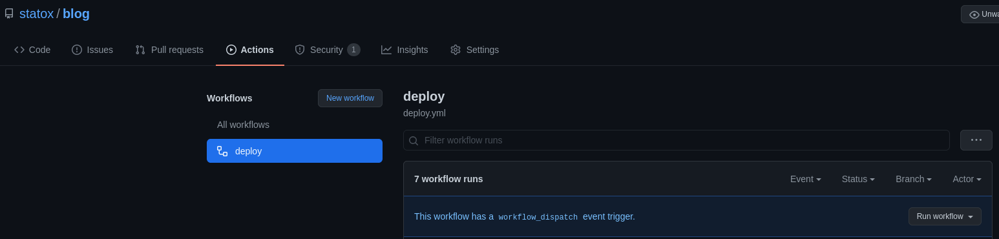

- 1214 words -
Last November travis-ci announced a change in their pricing policy and that made me think about changing the CI environment I use for this website. After procrastinating on this topic for a few months I finally switched to Github Actions here's why and how I did it.
When I created this website I needed to setup a CI environment which would build the site using the static generator eleventy before it gets deployed to Github Pages. I wanted a tool which would be:
I had already used travis on a previous side project and I knew I could make something work pretty easily, especially because I had already an account set up. So I didn't give it too much thoughts and started creating my .travis-ci.yml file. And I have to say that after about 200 commits and 8 months of use I am still mostly satisfied this their service.
The only trouble I had with travis was a few months ago when they decided to enforce the migration of all the open source repos from travis-ci.org to travis-ci.com. I was annoyed because my build suddenly broke and I had to do the migration when I wasn't planning to do it. In their defense though the migration was announced since 2018 and I was in fault for not seeing the notices (or most likely forgetting about them). Also it was a minor pain as the migration was fairly straight forward.
With travis' new pricing policy each open source project has a finite amount of credits to use for their builds and once they are out of credit, the maintainer needs to email the travis team to ask for more credits. Considering how many credits I consumed since the change is effective I estimate that I would run out of credits in roughly 3 years: Who has time to send an email every 3 years for their side project? 🙄
Ok, maybe that wouldn't be too much of an issue and I understand travis policy: In the end a company needs to make money to provide good products. But still, I was curious to experiment with Github Actions as they seem pretty popular currently, are better integrated with my project which is already hosted on Github and are completely free for what I want to do (at least for now).
Before having a look at what changed let's see what my CI workflow needs to do.
It is a pretty straight forward process with three main steps:
gh-pages branch on the repo which is then served by Github Pages.To do that I had a 20 lines travis-ci.yml file which looked like this:
language: node_js
node_js:
- "stable"
cache:
directories:
- node_modules
script:
# Script to generate the issue in github used for comments
- npm run create-issues -- $GITHUB_TOKEN false
- npm run build
deploy:
provider: pages
skip_cleanup: true
github_token: $GITHUB_TOKEN
keep_history: true
on:
branch: master
local_dir: docs/
fqdn: www.statox.frThe first 3 blocks are used to setup the environment which will run the workflow: NodeJS is used to run my npm scripts, and we cache the node_modules which is still bigger than I'd want it to be (but that's another topic I'll try to tackle later).
The script block simply runs my npm script which creates the issues on Github and the one I use to run eleventy against my sources and output the result in a docs directory.
Finally the deploy block uses travis' deploy built-in provider "pages" which commits the docs directory to the gh-pages branch.
For all of this to work properly I had to generate a personal access token, store it in my repository secrets and copy it in my travis CI settings to be able to call the Github API to create issues and to commit my changes.
Because my workflow is very simple (no tests to run, no linting, etc...) moving it to Github Actions was pretty quick, it took me about 20 minutes to get it to work.
First I got rid of the .travis.yml file to avoid running both pipelines at the same time and I created a .github/workflow/deploy.yml file:
name: deploy
on:
push:
branches: [ master ]
workflow_dispatch:
jobs:
deployment:
runs-on: ubuntu-latest
steps:
- name: 🔀 Checkout
uses: actions/checkout@v2
- name: 🚩 Configure node
uses: actions/setup-node@v1
with:
node-version: '12'
- name: 🔧 Install and build
run: |
npm ci
npm run build
- name: 💬 Create issues for comments
run: npm run create-issues -- ${{ secrets.ACCESS_TOKEN }} false
- name: 🚀 Deploy
uses: JamesIves/github-pages-deploy-action@4.0.0
with:
branch: gh-pages # The branch the action should deploy to.
folder: docs # The folder the action should deploy.
token: ${{ secrets.ACCESS_TOKEN }}The name block is only to set up the name of the action which will be shown in the UI

The on blocks defines when the workflow is ran. I want to deploy every time I push something to the master branch and I also added the workflow_dispatch directive which create the Run workflow button in the UI to trigger it manually. I don't know if I'll ever need it but it doesn't hurt to have it.
The jobs block defines the different steps will will be executed (Github's doc explain that clearly) and that's where I needed to recreate what was happening on travis.
The checkout and setup-node built-in actions setup the environment (git checkout the master branch and install node 12 with npm).
The 🔧 Install and build step pulls the npm dependencies (which was done automatically on travis) and run my build script. And the 💬 Create issues for comments step runs my custom script for issues.
Finally I use an action from the action market place to commit my build to my gh-pages branch which is still served automatically by Github.
Note that the main difference here compared to the travis configuration is that my access token was already in the secrets of my repository so I could access it directly with ${{ secrets.ACCESS_TOKEN }} without additional config.
My experience with switching my CI to Github Actions has been pretty positive. The whole process is very well documented by Github, there are a lot of actions available on the market place which "just work", and for now it's completely free for my project.
Even if that means relying even more on a Microsoft product -which I'm not exactly happy about- that is easily counterbalanced by the how easy to use it is.
Posts in the same category: [meta]